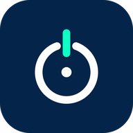
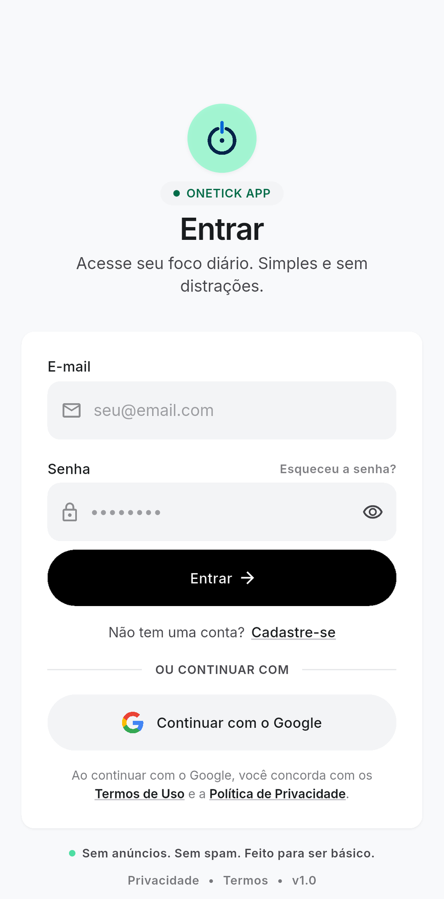
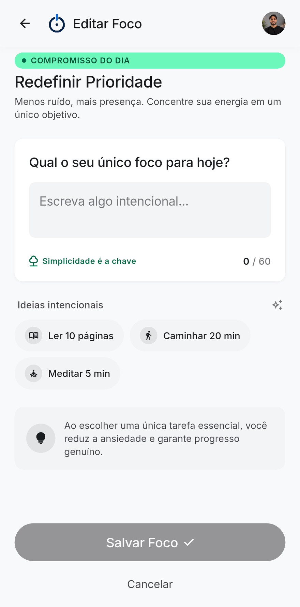
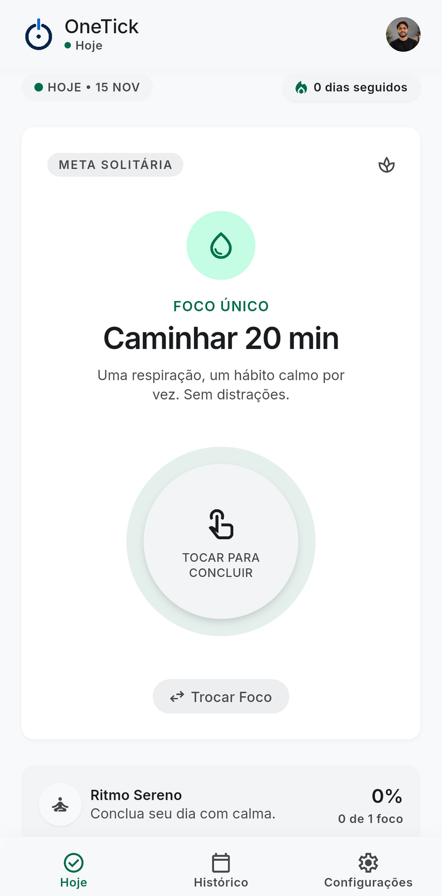
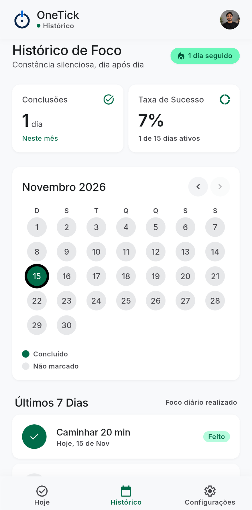

Guia simples do projeto: o que é, onde ficam os dados e como a arquitetura funciona.
A pessoa escolhe uma única prioridade por dia, toca para concluir e acompanha a constância no histórico.




No Cloud Firestore (banco de dados do Firebase), uma pasta para cada usuário e um documento para cada dia:
| Caminho | O que guarda |
|---|---|
users/{uid}/focus/2026-11-15 | o texto do foco, se foi concluído e a hora |
users/{uid}/settings/prefs | tema e lembrete |
uid igual ao do login).| Ferramenta | Para que serve |
|---|---|
| Flutter | Desenha as telas, um código só para Android e iOS. |
| Cubit | Guarda o estado da tela (carregando, erro, vazio, sucesso). |
| get_it | Entrega a cada classe o que ela precisa (injeção de dependência). |
| Firebase Auth | Login, cadastro e recuperação de senha. |
| Cloud Firestore | Banco de dados na nuvem. |
O código é dividido em camadas. Regra única: quem está em cima conhece quem está embaixo, nunca o contrário. As regras do app não sabem que o Firebase existe.
Duas pastas de apoio: lib/core (tema e componentes visuais) e lib/main (aplicativo e injeção de dependências). O ponto de entrada é o lib/main.dart padrão do Flutter.
Cada feature tem o mesmo nome em todas as camadas (por exemplo today em domain, data, presenter e modules). O que várias telas compartilham fica com a feature dona: today (foco do dia), login (autenticação) e settings (lembrete).
Uma ação do app, uma classe pequena. Ela só conhece o contrato, não o Firebase.
class CompleteTodayFocusUseCase { const CompleteTodayFocusUseCase(this._repository); final FocusRepository _repository; // contrato Future<FocusEntity> call() => _repository.completeToday(); }
Aplica a regra e manda o adapter gravar.
Future<FocusEntity> completeToday() async { final existing = await _adapter.getByKey(key); if (existing == null) { throw const AppFailure('Defina um foco antes de concluir.'); } final model = FocusModel( dateKey: key, title: existing.title, completed: true, completedAt: _now(), ); await _adapter.upsert(model); ... }
Chama o caso de uso e muda o estado. A tela reage sozinha.
final done = await _complete(); emit(TodayCompleted(focus: done, streak: streak));
| Problema | Solução |
|---|---|
| Tela travava sem internet | Timeout: a escrita fica no cache do aparelho e sincroniza depois. |
| Login com Google falhava no emulador | Emulador com Play Store e SHA-1 cadastrado no Firebase. |
| Tela Hoje mostrava o dia anterior | Recarrega à meia-noite e ao voltar do segundo plano. |
| Números de exemplo no protótipo | Tudo calculado a partir dos dados reais. |
| Overflow em telas pequenas | Rolagem ajustada e testes em vários tamanhos. |
| Tempo | Quem | O que falar |
|---|---|---|
| 0:00–2:00 | Thiago | A ideia do OneTick e o design no Stitch. |
| 2:00–5:00 | Thiago | Demo no celular: cadastro, definir foco, concluir, histórico. |
| 5:00–8:00 | Thiago | Arquitetura (as 5 camadas) e onde os dados ficam. |
| 8:00–10:00 | Thiago | Dificuldades e encerramento. |